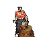
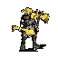

| Bezeichnung | Beschreibung | maximale
Ausrüstung |
|
 | Krieger | Der klassische Krieger. Kann alle Waffen und Rüstungen verwenden, ist aber ein grauenhafter Jäger und Sammler | 9999 |
|
| Schmied | Stellt in der Schmiede alle Arten von Gegenständen her. Auch die Verhüttung von Erz gehört zu seinen Spezialitäten | 6 |
|
| Heiler | Die Heilung ist seine Lebensaufgabe. Doch auch das Mischen von magischen Tränken gehört zur Handwerkskunst des Heilers. | 4 |
|
|  | Holzfäller | Der Mann mit der Axt kriegt jeden Baum klein. | 5 |
|
| Bäcker | Der typische Bäcker arbeitet in Bäckereien und stellt mehr oder minder gutes Brot her, aber er ist oft auch erfahren im Brauen und Winzen von Alkoholika. | 3 |
|
| Schürfer | Meist unter Tage sind sie die Spezialisten für den Abbau von Erzen und Steinen jedweder Art | 5 |
|
|  | Bauer | Spezialist für den Anbau von Getreide und die Tierzucht | 4 |
|
| Jäger | Wenn es darum geht, Fleisch heranzuschaffen, sind Jäger die richtige Wahl | 7 |
|
 | Magier | Die magischen Künste haben es ihnen angetan. Äußerst teuer im Unterhalt sind Magier doch eine gute Ergänzung einer Gruppe - wenn auch nicht immer nur als Kampfmagier. Für Waffengänge sind sie kaum zu gebrauchen. | 2 |
|
| Dieb | Diese Beschaffungsspezialisten setzt man für die eher düsteren Dinge ein, normale Arbeit machen sie höchst ungern. | 6 |
|
| Seemann | Die Seefahrt und das Fischen ist das Handwerk dieser Leute, mit Tieren und Fuhrwerken auf dem Lande können sie nicht so gut umgehen. | 5 |
|
| Barde | Ob er im Kampf die Moral der Krieger stärkt oder im Gasthaus über Ruhmestaten erzählt - ein Leben ohne Gesang wäre für ihn unvorstellbar. | 6 |
|
| Hexe | Hexen wirken ihre Magie gemeinsam als Hexenzirkel. Männern wird der Zugang zur Hexenmagie verweigert, daher gibt es nur weibliche Hexen. | 2 |